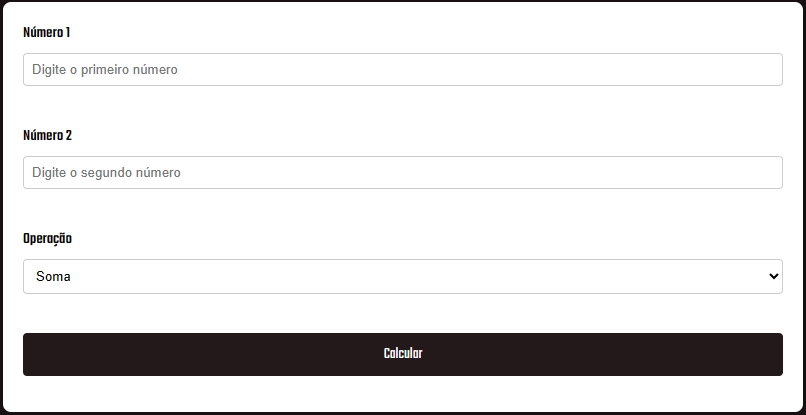
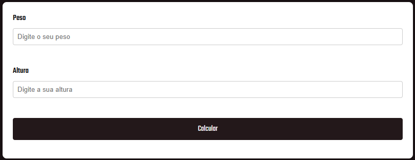
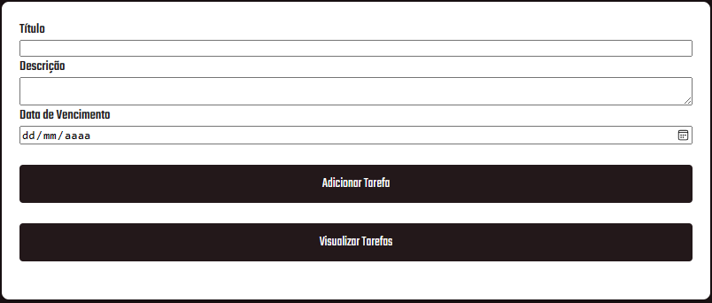
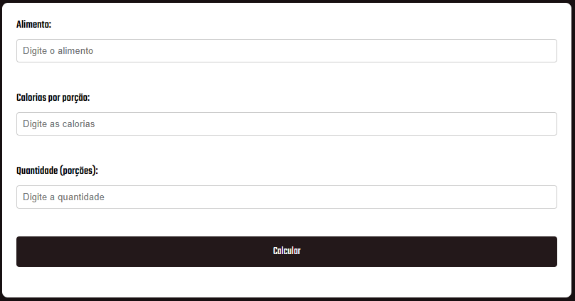

Trabalhando com Servlets 🖥️️
Confira!
em alta 🔥
Calculadora
A aplicação deve permitir que o usuário insira dois números e escolha uma operação matemática (adição, subtração, multiplicação, divisão, resto de divisão, exponenciação, radiciação). 😍

novo
Calculadora de IMC
Com base no peso e na altura fornecidos pelo usuário, a aplicação deve permitir que sejam inseridos peso e altura. E calcular o IMC e retornar o resultado. 😍

novo
Gerenciador de Tarefas
O objetivo da aplicação é permitir que os usuários criem, visualizem, atualizem e removam tarefas de uma lista. 😍

novo
Calculadora de Calorias
O objetivo da aplicação é permitir o cálculo de calorias de determinada porção de alimento. 😍
